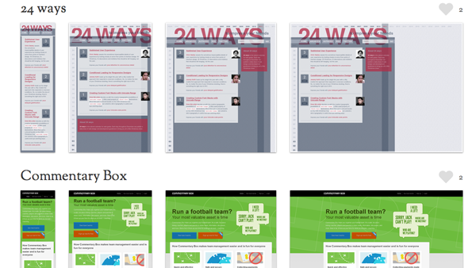

第2回HTML5読書会
4,5章
kzfm
kzfm
セレクタとは、HTMLドキュメント内の要素を検索する際に指定するパターン
1番目のp
2番目のp
3番目のp
1番目のp
2番目のp
3番目のp

responsivepxが地味に便利です
| Item | Price | Quantity | Total |
|---|---|---|---|
| Coffee mug | $10.00 | 5 | $50.00 |
| Polo shirt | $20.00 | 5 | $100.00 |
| Red stapler | $9.00 | 4 | $36.00 |
| Subtotal | $186.00 | ||
| Shipping | $12.00 | ||
| Total Due | $198.00 | ||
サンプルHTMLはGitにおいておきました。
または書籍のサポートサイトからダウンロードして下さい。
WAI-ARIAとは、Web Accessibility Initiative-Accessible Rich Internet Applicationsの略で、W3Cが現在、勧告に向けて策定作業 を進めているリッチなインターネットアプリケーションのアクセシ ビリティに関する仕様書のことです。
JavaScriptやAjaxなどを使用した動的なコンテンツは、スクリーンリーダーやキーボード操作では利用できないことがあります。
Webサイト、特にWebアプリケーションのアクセシビリティを改善するための仕様